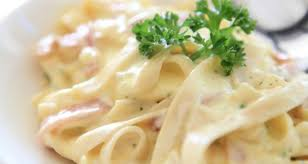

THE RECIPE PAGE

Description
Firstly,the white sauce is made with plain flour or maida, in combination with milk and spices,hence once the sauce is rested it may thicken and may have to adjust the consistency by adding water.
secondly,with respect to adding veggies, it is completely open-ended and may add as per your preference. having said that you have to chop these veggies finely so that it gets cooked quickly.
Lastly,this recipe tastes great when made with penne pasta, macaroni
Ingredients
for boiling pasta:
- 6 cups water
- 1 tsp salt
- 2 cup pasta
for sauteeing vegetables:
- 2 tbsp oil
- 3 clove garlic (finely chopped)
- ½ onion (chopped)
- ½ capsicum (chopped)
- 3 tbsp sweet corn
- ½ tsp pepper (crushed)
- ½ tsp salt
for white pasta sauce:
- 2 tbsp butter
- 3 tbsp maida / plain flour
- 2 cup milk
- ½ tsp pepper (crushed)
- ½ tsp chilli flakes
- ½ tsp mixed herbs
- ½ tsp salt
- cheese (for garnishing)
Steps
- Firstly, in a large bowl boil 6 cup water and 1 tsp salt.
- Once the water comes to a boil, add 2 cup pasta. i have used elicoidali pasta, you can alternatively use penne pasta.
- Boil for 7 minutes, or until the pasta is cooked and drain off the pasta and keep aside.
- In a frying pan, heat 2 tbsp oil and saute 3 clove garlic, add ½ onion, ½ carrot, ½ capsicum and 3 tbsp sweet corn.
- Saute for a minute or until vegetables shrink slightly yet remain crunchy.
- Further, add ½ tsp pepper and ½ tsp salt.saute well until the spices are well combined and keep aside.
- To prepare white sauce for pasta, heat 2 tbsp butter,add 3 tbsp maida and saute on low flame.
- Saute until the maida turns aromatic yet do not change its colour.
- Now add 1 cup milk and mix well and mix until the sauce thickens without forming any lumps.
- Further, add 1 more cup of milk and continue to stir continuously.
mix continuously, until the sauce thickens. if required using a whisk break the lumps.
- Cook until the sauce turns silk smooth and creamy texture.
- Now add ½ tsp pepper, ½ tsp chilli flakes, ½ tsp mixed herbs and ½ tsp salt.
- Mix well making sure everything is well combined.Add in sauted vegetables and combine well.
- Now add in boiled pasta and mix gently.Add 2 tbsp of boiled pasta water if the sauce thickens.
- Mix gently making sure everything is well combined.
- Finally, just before serving white sauce pasta, garnish with grated cheese.